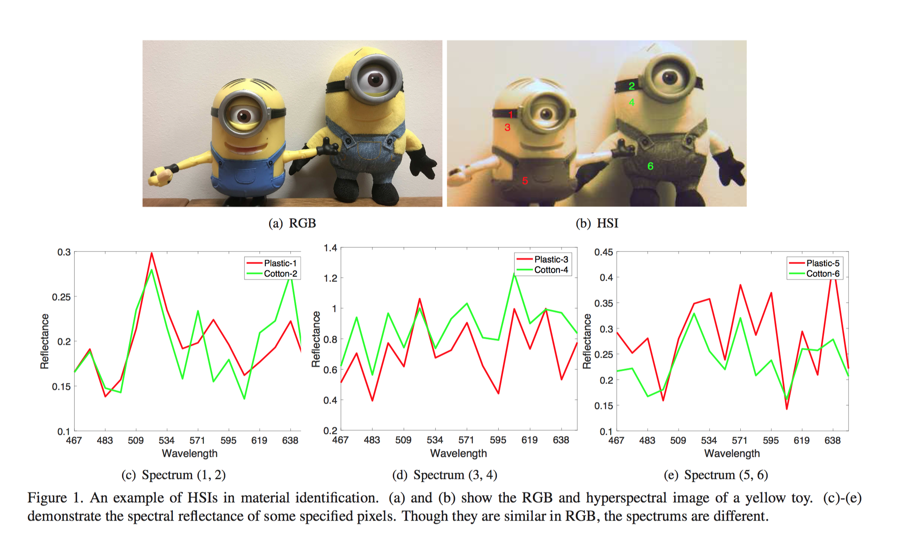
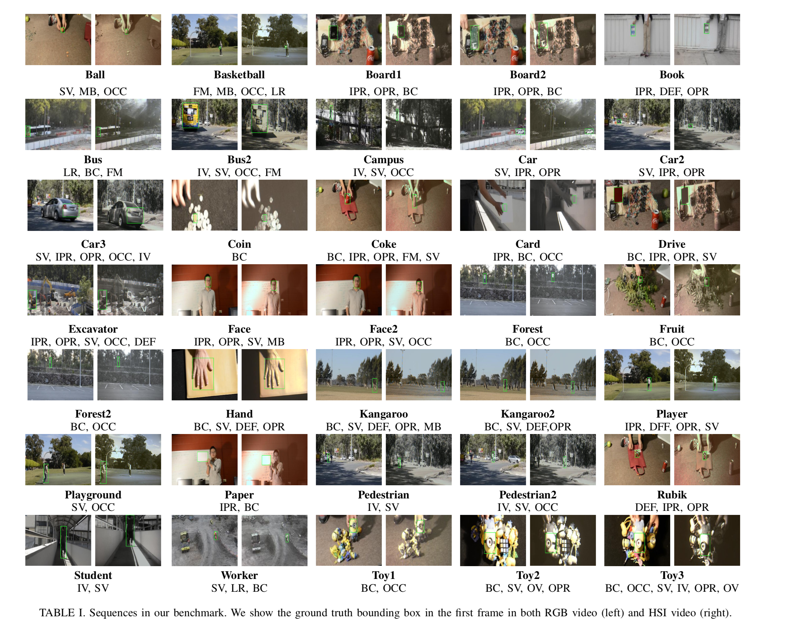

About HSI
Hyperspectral imagery (HSI) records continuous spectrum information for each object pixel instead of a monochrome or color intensities. These spectrum information gives very detailed information about the material constitution of the imaged object and increases the inter-subject discrimination. Follwing figure shows an example of HSIs in material identification. As can be seen, though it is black in pixel 1 and pixel 2, their spectral reflectances are different especially from 571nm to 638nm. 
About MHT
Material based Hyperspectral Tracking (MHT) aims to utilize hyperspectral imagery (HSI) to boost visual object tracking. This is the first large scale hyperspectral tracking dataset including 35 color sequences and 35 hyperspectral sequence. We carefully collect videos to include multiple target categories, diverse scenarios, rich activities and diverse content, etc.,to guarantee the generality and complexity of dataset. We believe this benchmark can not only complement the lack of investigating HSIs for object tracking but also drive the potential usability of HSIs in other computer vision problems, for example semantic segmentation and object detection.
MHT Benchmark
For each video in the dataset, we label the ground-truth by proving the bounding box annotation in the form of [x, y, width, height]. Each video is also labeled with the challenging factors according to 11 attributes listed in~\cite{Wu2015}, including illumination variation (IV), scale variation (SV), occlusion (OCC), deformation (DEF), motion blur (MB), fast motion (FM), in-plane rotation (IPR), out-of-plane rotation (OPR), out-of-view, (OV), background clutters (BC), low resolution (LR). An overvirew of the dataset is shown as below. The full dataset can be downloaded on via Googledrive

Citation
@InProceedings{Xiong_2019_CVPR, author = {Fengchao Xiong, Jun Zhou, Kun Qian, Yuntao Qian}, title = {Spectral-spatial features for material based object tracking in hyperspectral video}, booktitle = {The IEEE Conference on Computer Vision and Pattern Recognition (CVPR)}, month = {June}, year = {2019} }
Evaluation
The same as OTB dataset, we conduct one-pass evaluation (OPE) to assess the performance of each tracker. Three evaluation metrics are adopted, namely, distance precision, overlap precision and area under curve of sucess plot to measure different tracking algorithms. The definitions of the three metrics can be seen in the paper.